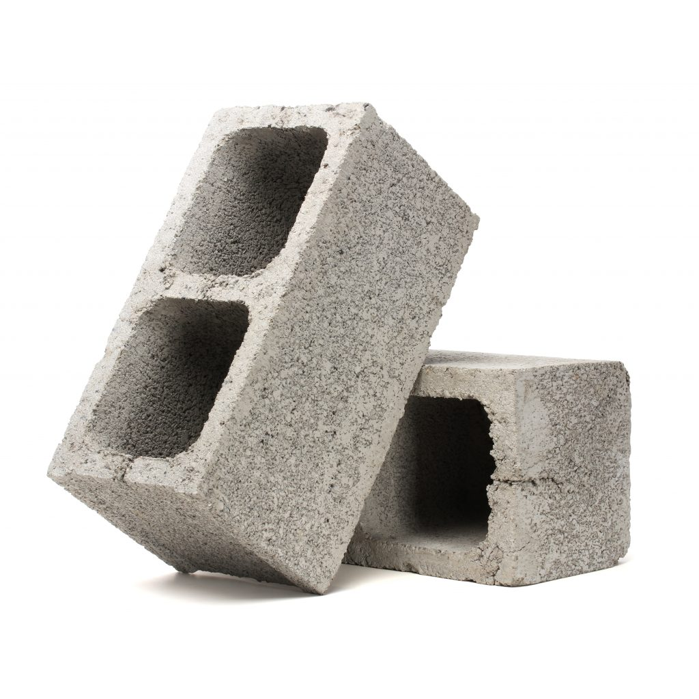
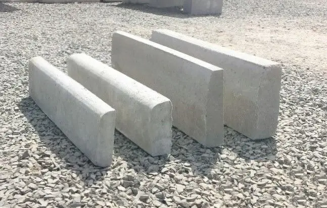

Artefatos de Concreto de Qualidade
Há 40 anos no mercado de construção civil, fornecendo artefatos de concreto, sempre priorizando qualidade resistência e segurança. Conheça a Mape Artefatos: confiança, solidez e excelência em cada peça!
Nossos Produtos
Explore os artefatos da Mape Artefatos, ideais para suas construções.
-

Blocos de Concreto
Blocos de concreto são peças moldadas com cimento, areia, pedra e água, usadas na construção de paredes e estruturas. São resistentes, duráveis e ajudam na rapidez da obra.
-
.png)
Pavimentos de Concreto
Pavimentos de concreto são superfícies feitas com concreto, usadas em ruas, calçadas e estradas. São duráveis, suportam cargas pesadas e exigem pouca manutenção. Também ajudam a refletir calor e reduzir deformações com o tempo.
-
.png)
Tubos de Concreto
Utilizados em redes de drenagem pluvial e esgoto. Oferecem excelente durabilidade, vedação e facilidade na instalação, garantindo segurança e eficiência em obras de infraestrutura.
-

Blocos de Concreto
Não perca tempo! Entre em contato para garantir a próxima peça que irá garantir o aprimoramento de sua construção.
Inovação, Durabilidade e Sustentabilidade
A Mape Artefatos de Cimento é uma empresa especializada na fabricação de artefatos de concreto de alta qualidade, como blocos, pavimentos, pré-moldados, e outros. Com foco em resistência e durabilidade, a Mape atende clientes dos mais diversos segmentos, oferecendo produtos resistentes e funcionais. Nosso compromisso é entregar excelência em cada peça, contribuindo para obras mais seguras, bonitas e eficientes. Seja em projetos residenciais, comerciais ou industriais, a Mape é sinônimo de confiança, solidez e dedicação.